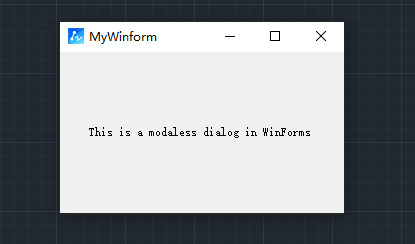
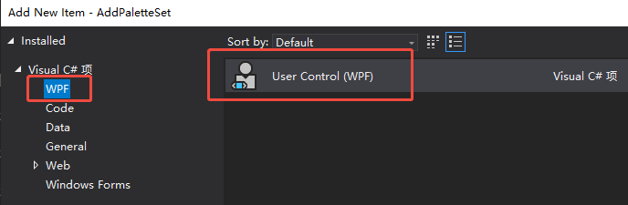
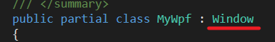
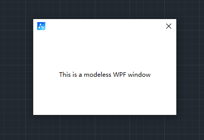

In the ZWCAD .Net API, developers can create modal dialogs (Modal Dialog) and modeless dialogs (Modeless Dialog) using WinForm or WPF.
- Modal Dialog: A modal dialog is a type of dialog that prevents the user from interacting with other windows until the dialog is closed.
- Modeless Dialog: A modeless dialog is a type of dialog that allows the user to interact with other windows while the dialog remains open.
This tutorial demonstrates how to create both types of dialogs using the ZWCAD .Net API and embed them into the ZWCAD environment.
WinForm Dialogs
Creating a Dialog
Right-click the project in Visual Studio, add a new item, and select "Windows Form".
Displaying the Dialog
It is recommended to directly call the ShowModalDialog and ShowModelessDialog methods in ZwSoft.ZwCAD.ApplicationServices.Application.
MyWinform form = new MyWinform();
Application.ShowModalDialog(form);
MyWinform form = new MyWinform();
Application.ShowModelessDialog(form);
Runtime Effect

WPF Dialogs
Creating a Dialog
Right-click the project in Visual Studio, add a new item, and select "WPF User Control".
Note: Since the default WPF control inherits from the UserControl object, modify the following two parts to inherit from the Window object.


Displaying the Dialog
It is recommended to directly call the ShowModalWindow and ShowModelessWindow methods in ZwSoft.ZwCAD.ApplicationServices.Application.
MyWpf form = new MyWpf();
Application.ShowModalWindow(form);
MyWpf form = new MyWpf();
Application.ShowModelessWindow(form);
Runtime Effect

Implementation Code
Please refer to the .Net sample project code: ZwDotNetGuide/ModelAndModelessDialog